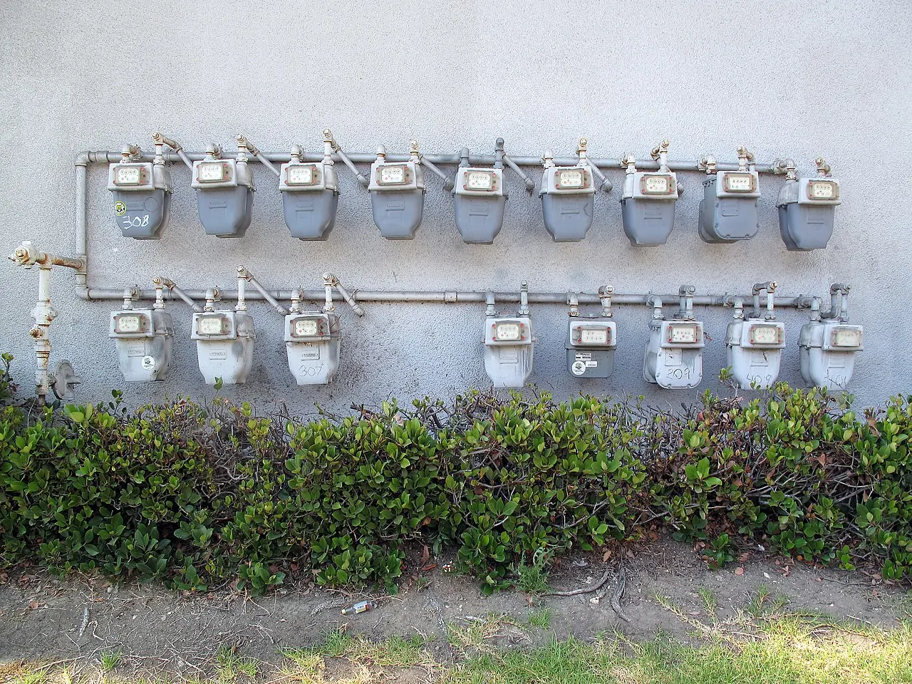

에너지 요금은 소비자가 계산대에서 바로 보는 항목은 아니지만, 작은 가게의 가격표에는 깊게 남습니다. 카페의 냉난방, 음식점의 가스레인지와 냉장고, 세탁소의 건조기, 편의점의 냉장 진열대, 미용실의 온수와 드라이어는 모두 고정비에 가깝습니다. 매출이 비슷해도 전기와 가스 요금이 오르면 사장님이 손에 쥐는 돈은 줄어듭니다. 그래서 에너지 가격은 물가 통계보다 먼저 메뉴판과 영업시간을 바꿀 수 있습니다.
자영업자의 어려움은 요금을 완전히 가격에 반영하기 어렵다는 데 있습니다. 대기업은 원가 상승을 계약이나 공급가에 나누어 반영할 수 있지만, 동네 가게는 손님 반응을 바로 마주합니다. 커피 한 잔, 국밥 한 그릇, 세탁 한 벌 가격을 조금만 올려도 손님은 체감합니다. 그렇다고 가격을 그대로 두면 마진이 얇아집니다. 이 좁은 틈에서 가게는 재료 조정, 운영시간 축소, 할인 축소, 메뉴 단순화 같은 선택을 하게 됩니다.
고정비는 왜 무겁나

에너지 비용은 손님이 없는 시간에도 발생합니다. 냉장고는 계속 돌아가야 하고, 여름과 겨울에는 냉난방을 완전히 끌 수 없습니다. 손님이 적은 오후 시간에도 불을 켜고 설비를 유지해야 합니다. 그래서 매출이 줄어드는 시기에 에너지 비용은 더 무겁게 느껴집니다. 매출이 늘 때는 일정한 고정비가 부담을 덜 주지만, 손님이 줄면 같은 요금이 훨씬 큰 비중을 차지합니다.
업종별 차이도 큽니다. 베이커리, 치킨집, 고깃집, 찜질방, 세탁소처럼 열을 많이 쓰는 업종은 에너지 가격에 민감합니다. 반면 사무형 서비스는 임대료와 인건비의 비중이 더 클 수 있습니다. 그래서 에너지 요금 인상은 모든 자영업자에게 같은 방식으로 오지 않습니다. 어떤 업종은 메뉴 가격을 바꾸고, 어떤 업종은 예약제를 강화하며, 어떤 업종은 아예 영업일을 조정합니다.
가격표에 바로 못 올리는 이유
소비자는 가격 인상의 이유를 모두 알기 어렵습니다. 전기요금이 올라서 커피값이 오른 것인지, 원두값 때문인지, 임대료 때문인지 한눈에 보이지 않습니다. 그래서 가게는 가격을 올리기보다 먼저 크기와 구성을 조정합니다. 세트 메뉴를 줄이고, 무료 제공 품목을 없애고, 배달 최소 주문 금액을 높이고, 포장 할인 조건을 바꿉니다. 소비자는 가격이 그대로라고 느끼지만 실제로는 제공 방식이 달라질 수 있습니다.
이런 조정은 단기적으로는 가게를 버티게 하지만 장기적으로는 고객 경험을 바꿉니다. 예전보다 서비스가 박해졌다고 느끼는 손님이 생길 수 있고, 가게는 불친절해지고 싶지 않아도 비용을 감당해야 합니다. 에너지 요금은 단순한 원가가 아니라 가게와 손님 사이의 감정까지 건드립니다. 가격표 뒤에는 숫자만 있는 것이 아니라 관계가 있습니다.
영업시간도 비용표입니다
요금 부담이 커질수록 가게는 손님이 적은 시간을 더 냉정하게 계산합니다. 오전 준비 시간, 늦은 밤 영업, 비수기 평일 오후처럼 매출이 낮은 구간은 에너지 비용을 감안하면 손해가 될 수 있습니다. 그래서 일부 가게는 휴무일을 늘리거나 브레이크타임을 길게 잡고, 예약이 없는 시간에는 공간을 닫습니다. 소비자는 가게가 예전보다 빨리 닫는다고 느끼지만, 가게 입장에서는 불을 켜는 시간 자체가 비용입니다.
배달 중심 가게도 예외가 아닙니다. 주방 설비와 포장재, 배달 수수료가 함께 움직이면 주문이 많아도 남는 돈이 줄어들 수 있습니다. 그래서 메뉴 수를 줄이고 회전이 빠른 품목에 집중하는 선택이 늘어납니다. 다양한 메뉴를 유지하는 일은 재료 재고뿐 아니라 냉장, 조리, 폐기 비용까지 요구합니다. 에너지 요금이 오르면 단순한 메뉴가 더 유리해질 수 있습니다.
지원보다 예측 가능성
자영업자에게 필요한 것은 일시적 지원만이 아닙니다. 앞으로 몇 달 동안 요금이 어느 정도로 움직일지 예측할 수 있어야 가격과 영업시간을 정할 수 있습니다. 갑작스러운 인상은 가게를 방어적으로 만들고, 방어적인 가게는 채용과 투자, 서비스 개선을 미룹니다. 작은 냉장 설비를 교체하거나 에너지 효율이 좋은 장비를 들이는 결정도 비용 회수 기간을 계산할 수 있을 때 가능합니다.
에너지 가격을 보면 물가의 다른 얼굴이 보입니다. 소비자는 최종 가격만 보지만, 가게는 불을 켜는 시간과 설비가 돌아가는 소리를 듣습니다. 앞으로 동네 상권을 볼 때는 임대료와 인건비뿐 아니라 에너지 비용이 어떤 업종을 더 압박하는지 살펴야 합니다. 메뉴판의 작은 변화는 단순한 가격 인상이 아니라, 가게가 버티기 위해 비용 구조를 다시 쓰고 있다는 신호일 수 있습니다.
자영업자가 체감하는 에너지 비용은 고지서 한 장으로 끝나지 않습니다. 냉난방을 줄이면 손님 체류 시간이 짧아질 수 있고, 조리 시간을 바꾸면 인력 배치가 흔들리며, 냉장 설비를 아끼면 식재료 폐기 위험이 커집니다. 전기와 가스 요금은 매장의 보이지 않는 운영 규칙을 바꿉니다. 가격표를 올리는 결정도 단순하지 않습니다. 주변 상권의 가격, 배달 수수료, 원재료비, 손님 수가 함께 움직이기 때문입니다.
그래서 에너지 부담이 커질 때 먼저 나타나는 변화는 메뉴판보다 작업 순서입니다. 오븐을 한 번 켰을 때 여러 품목을 몰아서 굽고, 피크 시간에만 일부 장비를 돌리며, 영업 종료 전 재고를 줄이는 방식이 늘어납니다. 카페는 얼음, 온수, 냉장 쇼케이스 사용량을 다시 계산하고, 음식점은 국물과 튀김처럼 열을 오래 쓰는 메뉴의 마진을 따져 봅니다. 이런 조정은 겉으로 작아 보여도 월말 손익에는 뚜렷하게 반영됩니다.
소비자는 가격 인상만 보지만, 매장 안에서는 품질을 유지하려는 압박이 함께 존재합니다. 양을 줄이면 신뢰가 흔들리고, 싼 재료로 바꾸면 재방문이 줄 수 있습니다. 좋은 대응은 비용을 숨기는 것이 아니라 손님이 납득할 수 있는 상품 구성을 다시 만드는 데 있습니다. 점심 세트, 예약 할인, 포장 전용 메뉴, 계절 메뉴처럼 운영 효율과 고객 만족을 함께 맞추는 선택지가 필요합니다. 에너지 요금의 문제는 결국 작은 사업자가 얼마나 버틸 수 있는 가격 구조를 만들 수 있느냐로 이어집니다.
정부 지원책을 볼 때도 금액보다 도달 속도가 중요합니다. 에너지 바우처나 요금 완화가 있어도 신청 절차가 복잡하거나 지급 시점이 늦으면 매장 운영에는 뒤늦게 닿습니다. 작은 사업자는 몇 달 뒤의 보전보다 이번 달 고지서와 임대료를 먼저 봅니다. 지원이 효과를 내려면 업종별 사용 패턴과 계절별 피크를 반영해 실제 현금 흐름에 맞아야 합니다.